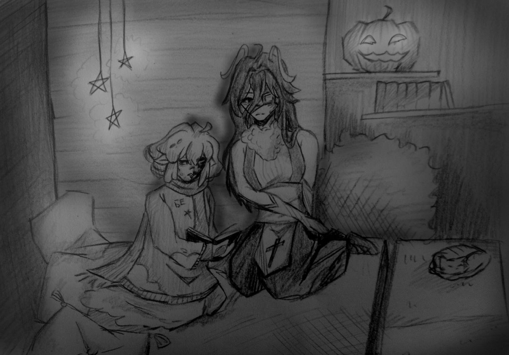

<!DOCTYPE html>
<html lang="ru">

</html>

<head>
    <title>Unburning and Collapse SMP</title>
    <link rel="stylesheet" href="sheet.css">
    <link rel="icon" type="image/x-icon" href="../img/minecraft_logo.ico">
    <meta charset="UTF-8">
    <meta name="viewport" content="width=device-width, initial-scale=1.0">
</head>

<body>

    <div class="header">
        <div class="nav-links" id="navLinks">
            <div class="dropdown">
                <button class="button" onclick="toggleMenu()">&#9776;</button>
                <div class="dropdown-content" id="dropdownMenu">
                    <a href="../chrsheets/soon.html">Кредиты</a>
                    <a href="../index.html#contact">Обратная связь</a>
                    <a href="../chrsheets/soon.html">О нас</a>
                    <a href="../gallery.html">Галерея</a>
                </div>
            </div>

            <a href="../lore.html">Лор</a>
            <a href="../character-bios.html">Анкеты персонажей</a>
            <a href="../index.html">Главная</a>
        </div>
    </div>

    <div class="post">
        

        <h1>Следствие вели</h1>

        <p>
            Расследование дела медленно, но верно ведётся. Найден адвокат и психолог. Но ночью появляется новый гость...
            Ацора, с какой целью? С целью узнать хотя бы что-то из забытого. В любом случае, это лучше, чем сидеть
            одному.
            <br><br>
            <cite>
                — Оставь попытки убедить меня, что виновата именно я...
                — Да говорю же! Это правда, только ты здесь виновна! ЭТО ВСЁ ИЗ-ЗА ТЕБЯ!
                — Что здесь происходит, Ацу?
            </cite>
            <br><br>
            Диалог прервала Морзе, можно сказать, очень вовремя, а может и нет. Ацоре было запрещено подходить к нему, а
            тем более разговаривать.
            Игнорировать это было нельзя, Морзе разом отвела Ацу подальше и предложила временно остаться жить в её доме,
            так будет безопаснее...
            <br><br>
            <cite>
                — Объяснись пожалуйста, что это сейчас было?
                — Она сама во всем виновата! Она прекрасно знала, как это важно для меня!
                — Разве твои личные ценности стоят её жизни? Это существо дало тебе всё, дом, еду, заботу и это твоя
                оплата?
            </cite>
            <br><br>
            Дом у Морзе кажется небольшим, но жить там вполне комфортно. На полке стоят книги и фигурка-ночник из тыквы,
            в углу посапывает серый котейка, а на кровати видно тень, что-то быстро черкающую в дневнике. Страницы
            мокнут, но грифель проявляет новые буквы. Это был старый дневник Ацу, там хранились её старые воспоминания,
            истории, с которых началось всё. Позже в дом вернулась Морзе.
            <br><br>
            <cite>
                — Кеннет, да...? Его имя есть здесь..
                — Могу я прочитать твой дневник? Хотя бы страницы о нём.
                — Немного..
            </cite>
            <br><br>
            Взгляд пробежался по трём страницам в руках слайма, этого было вполне достаточно, эта информация точно
            поможет в раскрытии дела...&#92432;⭒๋
        </p>
    </div>

    <script>
        function toggleMenu() {
            const menu = document.getElementById("dropdownMenu");
            menu.style.display = (menu.style.display === "block") ? "none" : "block";
        }

        // Close the dropdown if the user clicks outside of it
        window.onclick = function (event) {
            if (!event.target.matches('.button')) {
                const dropdowns = document.getElementsByClassName("dropdown-content");
                for (let i = 0; i < dropdowns.length; i++) {
                    const openDropdown = dropdowns[i];
                    if (openDropdown.style.display === "block") {
                        openDropdown.style.display = "none";
                    }
                }
            }
        }

    </script>
</body>